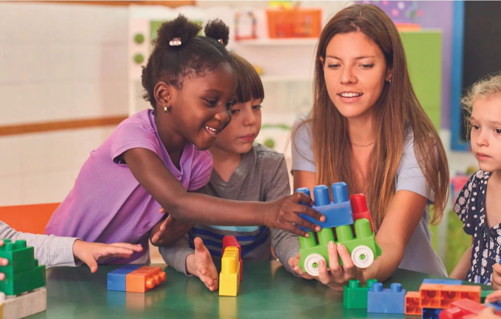

Working with Children, Families, and Communities in Contemporary
This resource explores the diverse and complex contexts that influence children’s development, learning, and wellbeing in contemporary Australian society. Early childhood educators play a critical role in understanding these contexts and responding through inclusive, evidence-based practices.
This website has been designed to support educators in recognising the impact of family and community experiences on children, while promoting equity, inclusion, and resilience in early childhood settings.
Purpose
- Examine key family and community contexts affecting children
- Apply sociological theories to understand children’s experiences
- Analyse Australian policies and their impact on early childhood practice
- Provide practical, evidence-based strategies for educators
- Promote collaboration with families, communities, and professionals
Context Overview
This website is organised into five key contexts:
- Economic Context: Explores poverty, housing stress, and financial hardship.
- Social Context: Focuses on family structures, separation, and social isolation.
- Cultural & Diversity Context: Examines multiculturalism, identity, and inclusion.
- Health & Wellbeing Context: Addresses mental health, trauma, and child wellbeing.
- Crisis & Emergency Context: Explores natural disasters, family violence, and displacement.
Why This Matters
Understanding children’s lived experiences is essential for creating responsive and inclusive early childhood environments. Factors such as economic hardship, cultural diversity, family transitions, and trauma can significantly shape children’s development and learning outcomes.
By applying theoretical perspectives such as Bronfenbrenner’s Ecological Systems Theory and Vygotsky’s Sociocultural Theory, educators can better understand how children’s environments influence their growth and wellbeing.
Educator Role Statement
Early childhood educators have a responsibility to
- Create safe, inclusive, and supportive learning environments
- Build strong partnerships with families and communities
- Recognise and respond to children’s diverse needs
- Advocate for equity and access to resources